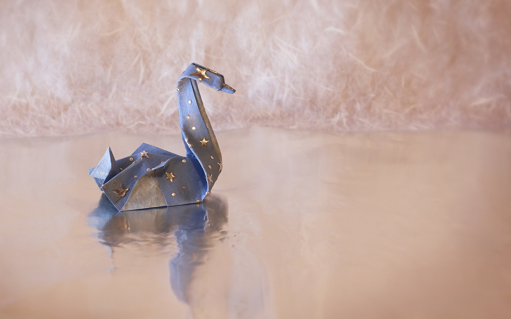

Oragami Instructions and Diagrams
Step by Step diagrams are probably the most popular and easiest to follow way to shows how to fold things out of paper. Trying to find good oragami instructions on the internet can be a lot of work. To help you search I've puit together the largest database of free oragami diagrams anywhere on the internet

Panda
- Giant pandas are good at climbing trees and can also swim
- An adult can eat 12–38 kilos of bamboo per day
- Prehistoric pandas lived up to 2 million years ago

Chameleons
- Chameleons have eyes in the backs of their heads
- Excluding their tail, some chameleons’ tongues can be twice the length of their body
- Chameleons actually change their color due to a number of different factors, including their mood, changes in light or temperature, or the humidity of their environment

Camels
- Camels are very strong and can carry up to 900 pounds for 25 miles a day.
- Camels can travel at up to 40 miles per hour – the same as a racehorse!
- Don’t make a camel angry – they can spit as a way to distract whatever they think is a threat

Pigeons
- Pigeons are incredibly complex and intelligent animals.
- Pigeons and humans have lived in close proximity for thousands of years.
- Pigeons can fly at altitudes up to and beyond 6000 feet, and at an average speed of 77.6 mph.

Teddy Bear
- The incident of Roosevelt sparing the bear led to the popularity and naming of Teddy bears.
- The Oxford English Dictionary dates the first use of the term teddy bear to 1906.
- Bear hugs predate teddy bears by 60 years. The term bear-hug was first recorded in 1846.

Cicada
- Cicadas can survive a huge fall as babies, or nymphs.
- They improve lawns by digging tunnels that allow air into the soil. When they die, their rotting bodies put nitrogen into the soil.
- Females may be attracted to the sound of motors. So you get to watch your dad, mom or older sibling get swarmed while they’re using the lawn mower or power tools.